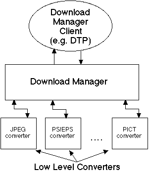
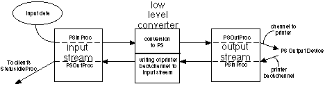

Legacy Document
Important: This document is part of the Legacy section of the ADC Reference Library. This information should not be used for new development.
Current information on this Reference Library topic can be found here:
ADC Home > Reference Library > Technical Notes > Legacy Documents > Printing >
Important: This document is part of the Legacy section of the ADC Reference Library. This information should not be used for new development.
Current information on this Reference Library topic can be found here:
|
OverviewA low-level converter is used by clients of the Download Manager to convert a file or stream of a given data type (or types) into PostScript output. For example, in Mac OS 8.5, the desktop printing software is a Download Manager client that offers drag and drop printing of files to the targeted desktop printer (DTP). When the target is a PostScript printer and a low-level converter is available to handle the conversion, that low-level converter can be used to generate the PostScript code to be sent to the device, without requiring a separate application. The Download Manager and its low-level converters are described in more detail in Technote 1169, "Download Manager."
Printing plug-in files reside in the "Printing Plug-ins" folder in the Extensions folder. Each plug-in file can contain multiple plug-in libraries. Each plug-in file contains a
Figure 1 below gives an overview of the Download Manager's relationship to its clients and the low-level converters.  Figure 1 RequirementsThere are several requirements for a plug-in to work with the Download Manager:
The 'PLGN' ResourceThe Download Manager uses the Printing Plug-ins Manager to manage its plug-ins. For a Download Manager converter to be seen by the Printing Plug-ins Manager, it must have a resource of type The The
A ResEdit template resource ( The
Required RoutinesThis section describes each of the routines required by the Download Manager. All of the routines described here are discussed in more detail in Technote 1169: "Download Manager." The descriptions here are intended to provide just an overview. This discussion of the routines and the order in which a converter should call them is tailored to the way the Download Manager calls a converter in response to the Finder's desktop printing software. In addition, this discussion assumes that the Download Manager client is downloading a file. This document discusses the differences between downloading files and downloading data from other sources in the section Input Stream Types. psLowGetConverterInformation
Before it can determine which converters can handle a given download job, the Download Manager must determine the capabilities of all the available converters. It does this by calling the
psLowCanConvert
When the desktop printing software asks the Download Manager if it can handle a given file, the Download Manager checks the Each converter returns a "priority", an indication of how well it can handle the given type of data. It is possible for multiple converters to handle data of a given type. If there are multiple low-level converters which can handle the data, the converter which returns the highest priority is chosen to convert the data. The data to convert is provided to the low-level converter as a psLowGetStreamInfo
If the data can be handled by a low-level converter, the Download Manager tells the desktop printing software that it can download the file. At that point, the desktop printing software wants more information about the type of data that it is downloading. Since the file is an opaque object to both the desktop printing software requesting the download and to the Download Manager itself, the Download Manager calls the converter's psLowPeekConvert
Once a file to be downloaded reaches the top of a DTP queue, the desktop printing software asks the Download Manager to download the file. In response, the Download Manager first calls the low-level converter's psLowAddConverterQueries
After calling the psLowDoConvert
After the Download Manager performs the queries, it calls the low-level converter's
The data is provided to the low-level converter as an input In addition to generating all the PostScript output and writing it to the output stream, it is the responsibility of the low-level converter to read data from the output stream and write it back to the input stream. Data read from the output stream consists of data returned from a PostScript output device. This can be error information or other types of status information. Writing such data back to the input stream allows the Download Manager to process this information appropriately. psLowGetConverterVersion
One final routine must be supplied by a low-level converter to provide version information. The routine Other DetailsThis section discusses some low-level converter issues in additional detail. The sample low-level converter code addresses each issue in depth, and there is sample code to support the discussion points. The ConverterDescription Structure
The low-level converter routine
The
The
The next field of the
The final field in the
A converter may be able to handle files or streams of different data types. The
The type field of the
The
The Download Manager uses the
In some cases the Download Manager cannot call the
The priority field in a
A sample Input Stream Types
The data to be converted by a low-level converter is provided via a
There are currently two types of
The A given low-level converter should be able to operate with either type of stream. When processing data types that don't require random access, this should be fairly straightforward. Ideally, peeking at the data is not required and will only improve the quality of the PostScript output. Writing the PostScript Language Output
During execution of its
To allow for the communication of status information about the data being written to a stream, the
The library
Appendix A has more information about the Reading the Back Channel
During the conversion process in the  Figure 2 Private Data HintsMost of the low-level converter routines have a Collection parameter passed to them. The purpose of passing a Collection to a low-level converter routine is to pass hints about the job requirements and to provide a container for arbitrary data to or from the routine's caller.
A low-level converter which gathers information during its peek phase ( The sample code described later in this document demonstrates passing collections to low-level routines. It also demonstrates the appropriate way of using private data hints to pass data from the peek phase to the conversion phase. Warning and Error Logging
A low-level converter operates without an explicit user interface and should not display any dialogs or alerts to the user. To communicate warning or error conditions, the low-level converter should use the
In particular, the
More information about the use of these subsections is contained in Technote 1169: "The Download Manager." Additionally the sample code uses When a low-level converter reports these conditions, the Download Manager passes the information to its client (such as the desktop printing software). In addition, the Download Manager has the ability to log this data to a log file. Normally this feature is disabled, but it can be enabled by a sophisticated user or developer. See the Tips portion of this document to see how to enable logging and how it might be useful during testing and development. Sample Code OverviewMost of the remainder of this document discusses a sample low-level converter which converts JPEG/JFIF data into PostScript output suitable for transmission to PostScript Level 2 and PostScript 3 output devices. The sample code is structured in a way that is intended to make it straightforward for developers to modify it to support conversion of graphics formats that are output as a single page. Examples include PNG and GIF. The sample code should also be relatively straightforward to modify to support multiple-page documents. The discussion about the sample code is divided into a number of sections. The section Sample JPEG Converter Specification provides a high level discussion of the sample code features. This is intended to provide an overview of the goals of this sample low-level converter. Within that specification is information about implementation. This information does not contain anything about the structure of the sample code, but is simply to provide an overview of the implementation. The section Introduction to the Sample Code Structure discusses the sample code's structure in some detail. In particular, it discusses the way the sample code is broken out into a "shell" which provides the support for printer feature handling, for the DSC structure of the PostScript output, and for the tagging of the output so that the Download Manager and its clients can report status. This "shell" code is usable as is for low-level converters other than a JPEG converter, particularly those that generate 1 page of output. The section JPEG Converter Specific Code discusses the portion of the sample code which has been tailored for handling JPEG output. This portion of the sample code relies on the 'shell' code to call it appropriately. This code is the guts of what makes this particular low-level converter a "JPEG" low-level converter. The low-level converter Shell Code section describes the "shell" code in some detail. This discussion is for those who want to understand everything about the sample code and/or for those who wish to create a low-level converter that handles more than a single page of output.
Sample JPEG Converter SpecificationThis portion of the document describes the sample JPEG converter module for use with the Download Manager. This module is a so-called 'low-level converter,' which simply means that it is a plug-in module that the Download Manager can call to 'convert' a stream of data of a certain type into a PostScript output stream. In the case of the sample JPEG converter module described here, conversion of the data into a PostScript stream means transformation of the raw JPEG or JFIF data into a stream more suited to the target PostScript output device.Some details are:
One significant goal of the JPEG converter module is that the output it produces conforms to the DSC. The converter module generates the necessary and appropriate DSC comments into the output stream. Overall StrategyThe basic strategy of the sample JPEG converter module is to determine first if the data stream is JPEG data that it can handle. The JPEG converter can handle raw JPEG data as well as JFIF data. The only known case of valid JPEG data that the converter cannot handle is "progressive JPEG," an extension to the original JPEG specification. Progressive JPEG data cannot be handled by a PostScript Level 2 or PostScript 3 output device directly. If the data is either invalid JPEG data or is "progressive JPEG" data, the JPEG converter reports that it cannot handle the data. Since this sample code cannot handle printing to Level 1 printers, the sample code checks the target language level and, if it is Level 1 or includes Level 1 (such as "Save as Level 1 Compatible"), it reports it cannot handle the file. When the JPEG converter can handle the data, it merely adds DSC header comments and a small PostScript "wrapper" around the JPEG data itself. For target output requiring support for ASCII data, the JPEG data is transformed into ASCII85 data on the host. In this case, the decompressed data is wrapped with a slightly different PostScript wrapper to ensure that it prints correctly. Print Dialog Feature SupportThe JPEG converter attempts to support most of the print dialog features normally associated with a standard print job. Since the user does not normally get a print dialog to select print time features when using the Download Manager or the JPEG converter module, the default features for the target desktop printer or output device are used. That is, the user gets the same result as if they had brought up the print dialog and clicked Print without adjusting any settings in the print dialog.
The saved defaults for these features are used as the print time values by the JPEG converter:
When printing to a "Save to Disk" DTP or to a printer which has "Save to File" as its default, a disk file is written instead of output being sent to the printer. The JPEG converter configures itself as described by the user's saved defaults for the Print dialog save panel. The user's choice of "PostScript Job" or EPS is respected; although no EPS previews are created. In addition, the
Some features from the Print Dialog are ignored. These features are:
One sticky point is the issue of paper size. For normal print jobs through the Printing Manager, the paper size is based on the print record, which in turn is based on the Page Setup dialog choices and the default print record. Since the user has no way of choosing these through the Download Manager, the default paper size is the default as given in the
One additional feature is that any Implementation DetailsThis section describes how the JPEG converter, as a plug-in for the Download Manager, implements each of its required routines. psLowGetConverterInformation
The JPEG converter returns a pointer to a
The psLowCanConvertThis routine is required to determine if the JPEG converter can handle the data stream and if so, with what priority. To determine this, the JPEG converter first determines if the output device requires Level 1 support. If it does require Level 1 support or has unknown PostScript support, the JPEG converter reports that it cannot convert the file.
If the PostScript psLowGetStreamInfoThis routine is used by a client to get some minimal information about the downloaded data type, and so forth. The JPEG converter reports the following:
These are the only pieces of information that the JPEG converter reports. Any other pieces of information requested are reported as Unknown. psLowPeekConvert
The JPEG converter does not need to peek at the data, so its psLowAddConverterQueries
The JPEG converter adds queries for the PostScript
The PostScript
The query hints used for these queries are:
psLowDoConvert
The purpose of the
The JPEG converter first allocates its buffers for reading data from the input stream and for reading data from any back channel that might exist. It then reads its first buffer of data from the stream and verifies that the data is valid JPEG data. It does this to obtain the width, height, and depth of the stream it is to convert. If, for any reason, the data cannot be handled, the converter reports this by writing a log message
The converter then evaluates the query results. If the query for The query for the channel allows the converter to configure whether it can write binary output.
If the converter can handle the data but the output stream requires ASCII data, the compressed JPEG data is encoded with ASCII85 encoding on the host before being written to the output stream. Note that in this case the converter uses the Note that if the source JPEG data is one component, a grayscale image is produced regardless of the color capabilities of the target device. Generating Error MessagesThe JPEG converter module generates error messages when it detects problems with the conversion. These error messages are in addition to any provided by the Download Manager itself, such as PostScript errors or other error conditions in the output device. The error messages initiated by the JPEG converter are those relating to its ability to convert the JPEG data into PostScript output for the current output device. They are provided to the downloading client and ultimately may be provided to the user in a useful form.
There are two cases where error messages are generated. The first occurs if, after a call to
The second case where the sample JPEG converter initiates an error message is if during Introduction to the Sample Code StructureThe sample JPEG converter is structured in a manner that is intended to make it easy for developers to create a new low-level converter to convert data formats that generate a single page of graphics. Even if a given data format generates more than a single page, the structure of the sample code is likely to ease the creation of new low-level converters. The structure of the sample code consists of two parts. The first part is a "shell" portion which provides the support for printer feature handling, for the DSC structure of the PostScript language output, and for the tagging of the output so that the Download Manager and its clients can report status. This "shell" code is not specific to any data type and hopefully has very few assumptions about what the output of a given low-level converter should be. The "shell" code consists of the files sample ConverterShell.c, sample ConverterShell.h, Utilities.c and Utilities.h. This code is described in detail in the section low-level converter "Shell" Code. The shell code is specifically written to make the creation of one-page graphic converters especially easy but does contain a significant amount of code that would make more extensive converters straightforward to write. The existing structure expects that there is only one page, and it is hard coded as such. The code is commented to indicate where the single page assumptions are and developers are free to use this code as a basis for making a converter that handles more than one page. The second part of the sample code is the part which is specific to the sample JPEG converter. It is what makes this low-level converter a JPEG converter as compared to a converter for GIF, FAX data, or other types of data. The files which comprise this portion of the code are sample JPEGConverterLib.c, sample JPEGConverterLib.h, sample JPEGConverterLib.r, and sample LangEnglish.r. The details of this portion of the implementation are described in the section JPEG Converter Specific Code.The remainder of this section provides basic information about what the shell code does and what a user of the shell code needs to provide to use the shell code without modification. Shell BasicsThe shell code supplies all the routines that need to be exported by a low-level converter for use by the Download Manager. This should make it easier to build a low-level converter that meets all the requirements of the Download Manager. The routines exported by the shell code call special routines which are supplied by the non-shell code. The term "shell client code" will be used to refer to this non-shell portion of a low-level converter that uses the shell code. The shell code handles a set of basic queries and gives the shell client code an opportunity to add additional queries should they be required. The basic queries it handles include:
In addition to specifying these queries, the shell code handles the results of the query to create information in a form useful to shell client code.
For example, the color output device query and color separations query are used to compute the Boolean Shell client code doesn't have to worry about generating any feature code, cover pages, or document level DSC comments: these are handled by the shell code. Since the shell code also handles the initial portions of the page level DSC comments, shell client code does not need to generate any DSC comments other than those necessary for the PostScript stream to draw a given page.
The shell code creates and uses a Before calling the shell client code to draw the actual page, the shell code performs scaling of the PostScript coordinate system so that the bounding box of the graphic is centered on the page and scaled to fit on the page, if appropriate. This generally gives attractive results for 1-page graphics formats that might have not fit on a single page or that would have been clipped by the imageable area. This 'auto scaling' may not be appropriate for some data types or graphics formats. This request for auto scaling may be removed from the shell code if a given low-level converter does not want this functionality.
Details on how the shell code performs its duties are described in the section low-level converter "Shell" Code.
Using shared global data does have at least one side effect that is reflected in the source code. In particular, accessing the resource fork of the plug-in file must be done carefully. The approach taken in the sample code is to access the resource fork by opening and closing it each time the converter needs to access data from the resource fork. Another approach is to open it at the beginning of the relevant routine and close it before ending that routine. An approach which does not work with shared global data is to open the resource fork in the library fragment initialization routine and expect that resource fork to be available to all clients. This does not work because the resource fork is only in the resource chain of the application which first loads the plug-in. Other uses of the plug-in after it has been loaded do not call the library fragment initialization routine if the library is marked with shared global data. Attempts to use the resource fork in this situation fail. Shell UsageThe .c file called "sample ConverterShell.c" contains the shell code. This file is normally not modified by a user of the shell code. It consists of the exported routines needed by the Download Manager. It implements those exported routines by doing as much as it can in a generic fashion, while calling specific routines to be implemented by a low-level converter. The routines to be implemented by a low-level converter that uses the shell code and which are called by the shell code are:
Here are the descriptions of these routines called by the shell code: converterGetConverterInfoPtr
This routine is used by the shell code during psLowGetConverterInformation to obtain the converterCanConvert
This routine is used by the shell code during
converterGetConverterDocType
This routine is called by the shell code as part of
The stream and hints information is passed to allow a converter to examine the data, should it need to read the data stream to determine the 'type' of data. A converter that only handles one type of data should not read the data, but simply return the supported type in converterPeekConvert
This routine is called by the shell code during the
converterGetVersion
Called by the shell code as part of converterAddAdditionalQueries
Called by the shell code during
If a converter wants to add additional query hints, it should add them to the query collection parameter. converterGetConverterName
This routine is called by the shell code during
Shell client code should not write to the output stream during the call to converterDisposeDoConvertClientData
This routine is called by the shell code during converterGetBBox
This routine is called by the shell code during converterEmitProlog
This routine is called by the shell code during
converterEmitPageData
This routine is called by the shell code during
The PostScript coordinate system in force at the time this call is made has been set by the shell code to be the default PostScript coordinate system as modified by any device adjust matrix and any autoscaling necessary to center and scale the bounding box reported by
Resources
Once these routines have been implemented, the C code is complete, but the converter is not. A converter module must also have the appropriate resources, in particular the
The name "YourConverterModuleLibName" above should be replaced with the name used for the converter code fragment.
That should be it. Once the converter module is built correctly (get that library name to match in both the You can use the shell code as is. If so, you should also read section JPEG Converter Specific Code. Those not using the shell approach or those who want to know more about the shell approach should read section low-level converter "Shell" Code to understand better what the shell code is doing. Shell Utility RoutinesIn addition to calling the routines that are supplied by the converter shell client, the shell code makes available some routines that are useful to the converter. Descriptions of these functions follow. openLowLibraryResFile
This routine is used to open the library resource file so that resources can be used. The caller of this routine must close the resource fork when finished. The file is opened read only.
ReadWriteBackChannel
This routine is to be called by a converter so that any data coming up the back channel from a PostScript output device is properly passed back to the Download Manager so it can look for errors or status messages. This routine should be called regularly by a converter as it is writing data out. This routine is only for use during the
writeLogMsg
This routine is called by a converter to log any error or warning messages which are appropriate during the data conversion.
JPEG Converter Specific CodeThe files in the sample code which cause this sample low-level converter to be a JPEG converter are the files sample JPEGConverterLib.r, sample JPEGConverterLib.c, and sample LangEnglish.r. Sample 'PLGN' Resource
The file sample JPEGConverterLib.r provides the
Specifically this
For this sample converter, the sample LangEnglish.r file contains a Sample Converter Description
The shell code doesn't know anything about what types of data an actual low-level converter can handle, so "shell client code" must supply a converter description. The sample code declares a new type of data
Here is the
There are a couple of points that are worth noting. First, the info field of the
For our sample converter,
The
The priority supplied for each type is
The sample code doesn't have to reposition the stream and this would allow it to work both with streams which allow positioning (
Because the sample JPEG converter can't always support downloading streams that begin with our converterGetConverterInfoPtr Routine
The
The converterInitDoConvertClientData Routine
This routine allows the shell client code to allocate and initialize any data that it needs to perform the conversion. One important point is that the shell code passes in a pointer to the converterPeekConvert Routine
Our sample code has no need to peek at the data since it can obtain all the data it needs by reading the header of the JPEG data stream. Normally the sample code simply returns from the
To aid those developers who might wish to collect data during the peek phase and access that data during the conversion phase, the sample code has some conditionally compiled code to give an example of how to store private hints corresponding to data collected during the peek phase. There is also corresponding conditionally compiled code contained in the conversion phase code to access the stored private hints. Remember from the earlier Private Data Hints section that the converter might be unloaded between the
The reason for being careful about how private hints are stored is because any collection tags added to the hints collection may conflict with hints that are stored in that collection by the Download Manager or other portions of the code path. To overwrite such hints could produce unpredictable behavior. To avoid this problem, the collection tag value In principle, this only allows a single piece of data to be stored by each developer. The data stored is private and need not be in any specific format. It may be convenient to have the private data itself be a collection, and the sample code demonstrates how to accomplish this.
To store a collection, one must flatten it into a handle and then store that handle. To access the stored data, one must get the collection item handle and unflatten it back into a collection. The conditionally compiled sample code does just this. It first creates a "private" collection and stores the data for a few fake "private" hints. It then flattens the private collection and stores that with the converterEmitProlog Routine
The shell code client's This approach is fine for converters which have small prologs, but if your converter has a large prolog, it may be preferable to store it as a resource and to load the resource and send it when needed. This has the advantage of requiring less memory during the entire conversion, since global data is in memory whenever a converter is loaded (ignoring virtual memory considerations) and resource data is only loaded upon request. However, having the prolog in the resource fork requires each instance of a low-level converter to load its prolog rather than using the shared global data. This means that the total memory used by all instances of a low-level converter will be larger for this case. You should keep these tradeoffs in mind when deciding where to store your prolog.
After writing the prolog code, converterEmitPageData Routine
The
To emit the portion of the PostScript code which parameterizes the call to the PostScript image operator, the sample code calls the
The string being output is
The use of '^d' within a string is similar to the use of '%d' in a format string for
To write the JPEG data to the output stream, the sample converter uses the
For more information on the formatting routines in
While writing the JPEG data, the
Calling Use of WriteLogMsg
The sample code uses the low-level converter "Shell" CodeThis section describes the operation of the shell code in more detail. In principle, only those who want a deeper understanding of the shell code or who need to modify it need to read this section. In practice, since the shell code is compiled into your low-level converter, you might want to understand it better even if you don't plan to modify it.
The biggest limitation of the shell code as implemented for the sample JPEG converter is that it is currently hard coded to generate one page of output. The shell code's psLowGetStreamInfo
This routine is implemented in a generic fashion since the only data required from the shell client code is the type of data that is actually contained in the file. Since the data in the stream is opaque to the caller of the Download Manager, the low-level converter which can perform the download is the only entity that can authoritatively determine the data type. The shell code calls the shell client code's
The shell code determines whether an EPS or PostScript language download job is requested. If it is EPS, the shell code knows the number of copies is always 1; otherwise, it looks for the job hint which indicates the number of copies to generate and returns that value. If the job is not EPS, it calls the routine As described above, the shell code always reports 1 for the number of pages. psLowDoConvertThe shell version of this routine takes care of the bulk of the generation of the DSC comments, the feature code, and the invocation of the shell client code's routines for generating the PostScript output into the stream. It begins by allocating a buffer for reading the back channel data that might be returned by the output device back to the host. It does this so that both the shell client and the shell code itself can use this buffer to read the back channel.
The shell code calls the routine DSC Comments and Feature Code
The shell code adds a number of hints that, on the surface, don't seem to be used anywhere. These hints include:
The shell code emits a number of DSC comments into the stream by using the
The routine
The
By passing this information about the document structure to
This stylized way of using
The
The Auto ScalingIt is important to point out again that the shell code does auto scaling so that the page of output is centered and, if it would not fit on the page, is scaled to fit on the page. The orientation of the output depends on the dimensions of the printed sheet and the bounding box of the data drawn. The drawing is oriented on the page so that the longest dimension of the bounding box is aligned with the longest dimension of the paper.
This type of scaling may not be appropriate for all types of converters. It is implemented as a call to
This is done in this manner for two reasons. First, not all users of Device Adjust Matrix
The shell code generates a device adjust matrix adjustment which reflects the
Similar to the handling of
Note that the shell emits PostScript code surrounding the invocation of TipsConverter Priorities
The Download Manager favors external converters over internal converters of the same priority. This means that if the sample JPEG converter is placed in the "Printing Plug-ins" folder it is favored over that built into 'PLGN' Resource Editing
While not strictly necessary, a Caching IssuesThe Download Manager resolves aliases placed in the "Printing Plug-ins" folder. It is convenient to put an alias to a low-level converter in the "Printing Plug-ins" folder during converter development. If there isn't already a "Printing Plug-ins" folder in the Extensions folder, the Download Manager will create one automatically when it is called for the first time. One way to cause this to happen by dragging any document onto a desktop printer created by LaserWriter 8 when using Mac OS 8.5 or later.
To improve performance, the Download Manager caches both the list of converters in the "Printing Plug-ins" folder and the
If the
This "problem" only manifests itself when the
Initial Software DevelopmentGetting Your Converter Seen by the Download Manager
Until the
The easiest way to do this is to put a breakpoint on the converter's Getting Your Converter Called For Your Data Types
Once the converter is seen by the Download Manager, the next thing is to make sure that the converter is being given a chance to convert all the files which have match the data types and If the converter's
Logging
A low-level converter (and the Download Manager itself) can tag data that it writes to a stream by setting
The Download Manager has the ability to write these error and warning messages to a log file. This ability is turned off in the version of Using Logging
Developers are encouraged to use the In addition, it may be useful to add warning messages as part of debug builds of a low-level converter. This allows you and your testers to look at a trace of what is happening during the execution of your converter. This may be useful as a supplement to the standard debugging strategies of setting breakpoints or using debug strings. Enabling Logging
To turn on logging, edit the
The logging ability does have a bit of flexibility that might be useful to some developers or sophisticated users. It can be configured slightly by editing the
When logging is enabled, the log file with the name specified by the Summary
This Technote describes how to write a low-level converter for use with the Download Manager, part of LaserWriter 8 and ReferencesTechnote 1169: The Download Manager Technote 1170: The Printing Plug-ins Manager Inside Macintosh: QuickDraw GX Environment and Utilities Inside Macintosh: PPC System Software (CFM) Change HistoryOriginally written in April 1998 by David Gelphman and Ingrid Kelly Revised in June 1999 by Dave Polaschek Appendix A: Useful PSUtilsLib Routines and Structures
Low-level converters write their generated PostScript data to procedures passed in a structure of type
|
typedef struct PSSerialStream{
PSWriteProc write;
PSReadProc read;
UInt32 reserved;
PSPosition pos;
}PSSerialStream;
|
The write proc of a PSSerialStream is used to write PostScript data to a consumer of the data. The write proc of an output stream typically writes data to a PostScript output device or data file. The write proc (if it exists) on an input stream writes data back to the Download Manager or similar client for further processing. For example, it is appropriate to write data read from an output stream back to the input stream so that the Download Manager can handle status or other data returning from the back channel of an output device. It is important to test that the write proc is not NULL before calling it.
The read proc of a PSSerialStream is used to read data from that stream. The read proc of an input stream reads the data from the input stream. For a low-level converter, this is the data to convert. The read proc (if it exists) of an output stream represents data coming back from a PostScript output device. It is important to test that the read proc is not NULL before calling it.
The reserved field in the PSSerialStream structure is currently unused by a low-level converter.
The PSPosition structure in the PSSerialStream communicates structural information about the data being written to a stream. This is discussed in detail in the next section.
The PSPosition structure allows generators of PostScript output to communicate structural information about the data they are writing. When generators of PostScript output properly use the PSPosition structure, it allows software clients to have knowledge of the data being written, without them having to parse the PostScript data itself. An example of this is the way the LaserWriter 8 driver reports status during printing by looking at the PSPosition data written to the output stream by the PrintingLib routines which convert QuickDraw drawing into PostScript data. Another example is the status that the Download Manager and its clients report as a low-level converter generates its PostScript data.
The PSPosition structure is defined as:
typedef struct PSPosition{
PSSection section;
PSSubsection subsection;
void *info;
SInt32 id;
}PSPosition;
|
The section field is of type PSSection and contains the identification of what "major" part of the job is in progress. The values of this field can be kSectAnon, kSectQueryJob, kSectCoverPage, kSectJob, and kSectPeek. These correspond to the different parts of the job, as controlled by the Download Manager and this field is filled in by the Download Manager, not by the low-level converter.
The subsection field is of type PSSubsection and is used to describe the details of the PostScript output corresponding to the data write call. PSSubsection values typically correspond to Document Structuring Conventions (DSC) data but there are additional values which suit some specialized needs.
The info field is either a NULL pointer or a pointer to data whose type is defined for the PSSubsection value in the subsection. The data (if any) pointed to by the info value coincides with the data being written to the output stream. For example, when calling the write routine with the data "%%Pages: 4", the caller would put the PSSubsection value kSubPages into the subsection field of the PSSerialStream and the info field would point to an SInt32 with the value 4. See the header file PSStreamInfo.h for the list of PSSubsection values and the proper data type for the info of each PSSubsection.
The ID field is an SInt32. This is used by generators of the PostScript output to generate output for a given subsection over a series of writes, yet still identify the data as one conceptual block of data. This is done by performing the consecutive writes with the same subsection, info, and ID values. When the data being written corresponds to a new subsection, then the ID value is incremented. Doing writes in this fashion allows software clients looking at the structural data to notice when the PSPosition data may have changed without having to look at any other fields in the structure. For example, a client (such as the Download Manager) monitoring the position information being written to the stream has a test like:
if(jobstatus->lastPosId != stream->u.ps.pos.id ){
... process the new position we are now seeing
...
// update our the last position we saw
jobstatus->lastPosId = stream->u.ps.pos.id;
}
|
Here is a simple code example to bring together the basic ideas presented on streams. The data is hard coded into this routine to improve readability.
#include "DownloadMgrLib.h"
#include "PSStreams.h"
OSStatus writePages(PSStream *streamOut)
{
OSStatus err = noErr;
PSSerialStream *stream;
if(streamOut->type == kPSRandomAccessStream)
stream = &(streamOut->u.file.serialStream);
else{
if(streamOut->type == kPSSerialStream)
stream = &streamOut->u.ps;
else{
// we don't know that type of stream!
err = errCantHandleThisDownloadData;
}
}
if(!err && stream->write){
SInt32 pages = 4;
unsigned char *formatString = "\p%%Pages: ";
// the subsection reflects the fact that
// we are writing kSubPages
stream->pos.subsection = kSubPages;
// the info field is a pointer to the number of pages
stream->pos.info = &pages;
// distinguish this write from any previous
stream->pos.id++;
// now go ahead and write the '%%Pages: ' portion
// of the comment
err = stream->write(streamOut, formatString +1,
formatString[0]);
// now go ahead and write the value of the number
// of pages with the SAME id since it is part of
// the same DSC data we are emitting
if(!err){
Str15 pagesStr;
NumToString(pages, pagesStr);
err = stream->write(streamOut,
(unsigned char *)pagesStr + 1,
pagesStr[0]);
}
// now write the newline with the SAME id
if(!err){
err = stream->write(streamOut, "\r", 1);
}
// reset the PSPosition data after our write call
stream->pos.subsection = kSubAnon;
stream->pos.info = NULL;
// we must bump the id so that consumers of this
// stream will know that we are done with the
// write of the Pages comment when the next write
// is done.
stream->pos.id++; }
return err;
}
|
|
Note: |
Generating PostScript output for a given print job typically involves emitting both constant data such as the %%Pages comment, as well as variable data such as the SInt32 value for the number of pages as in the example above. Sometimes the data needs to be formatted differently depending on the characteristics of the output communications channel. The most obvious example of this occurs when generating PostScript string data since there needs to be quoting of various characters, depending on whether the channel supports the full range of binary data. The need to supply the PSPosition information while generating output adds an additional requirement when generating output.
The PSUtilsLib library built into PrintingLib has routines which make generation of PostScript output significantly simpler. PSUtilsLib contains routines that make it simple to generate formatted output with and without positional information.
Before introducing the output routines, there are a couple of relevant data types that must be introduced first.
The StreamInfoData type is a pointer to an opaque data structure that is passed to the PSUtilsLib stream output routines. This opaque structure contains information about the communications channel which enables the stream formatting routines to generate proper PostScript output. There are routines for creating and disposing of this structure.
typedef struct StreamInfo *StreamInfoData; OSStatus psSetupStreamInfoData(StreamInfoData *comm, PSStream *PSStreamP, Collection hints); |
psSetupStreamInfoData allocates and initializes a StreamInfoData structure corresponding to the PSStreamP and the hints collection. It consults the hints collection for hints indicating the capabilities of the communications channel (see Appendix B). The resulting StreamInfoData can then be passed to the stream output routines described below to write to the stream represented by PSStreamP and generate output properly formatted for that communications channel.
OSStatus psDisposeStreamInfoData(StreamInfoData *comm); |
psDisposeStreamInfoData disposes of the StreamInfoData structure that was created and returned from psSetupStreamInfoData. Upon return of this routine, *comm is NULL.
When generating PostScript output that is to be tagged with a given PSSubsection value, it is useful to group the PostScript output string together with an associated PSSubsection value. The data structure SubsectionStr gathers these pieces in one place. The definition of SubsectionStr is:
typedef struct SubsectionStr{
StringPtr format;
PSSubsection subsection;
}SubsectionStr;
|
An example of a SubsectionStr for generating the %%Pages DSC comment would be:
const SubsectionStr psPages = {"\p%%Pages: ^d\r",kSubPages};
|
The format field of the SubsectionStr is a Pascal string that may contain formatting data. In the above example the format uses the ^d formatting marker. This will be described shortly.
The psOutFormat routines and its structured equivalents described below allow straightforward use of output formatting similar to the printf routine in the standard C library. Because the '%' character is a significant character in PostScript data, these routines use the '^' character as the format marker character.
OSStatus psOutFormat(StreamInfoData comm,
ConstStr255Param format, ...);
|
The supported formats are:
0x20 - 0x7F
OSStatus psOutFormatPosition(StreamInfoData comm,
const SubsectionStr *format, ...);
|
psOutFormatPosition is just like psOutFormat except that it takes a pointer to a SubsectionStr structure rather than a format string. The SubsectionStr structure provides both a format string and a PSSubsection value for that format string that will be passed to the stream's output routine to identify the type of PostScript that is being written. psOutFormatPosition first inserts the PSSubsection value into the subsection field of the PSPosition in the stream and stores a NULL into the info field in the stream's PSPosition structure. It then writes the formatted output to the stream. This routine takes care of ensuring that the PSPosition data is handled appropriately, i.e., in a similar manner to that shown above in the section Simple Example of Writing to a Stream.
OSStatus psOutFormatPositionInfo(StreamInfoData comm, const SubsectionStr *format, void *info, ...); |
psOutFormatPositionInfo is just like psOutFormatPosition except the info value passed to this routine is stored in the PSPosition structure in the stream that is passed to the write routine prior to the write. The info pointer provides additional information to the PostScript positional information provided by format. After psOutFormatPositionInfo returns, the info field of the steam's PSPosition structure is null.
OSStatus writeFormattedPages(StreamInfoData comm)
{
OSStatus err = noErr;
const SubsectionStr psPages = {"\p%%Pages: ^d\r", kSubPages}; SInt32 pages = 4;
err = psOutFormatPositionInfo(comm,
// the format
&psPages,
// now the info. For the kSubPages it is a
// pointer to an SInt32
&pages,
// now the data to satisfy the format. The ^d
// takes this long and writes the output
pages);
return err;
}
|
OSStatus psOutHexBlock(StreamInfoData comm, Byte *block,
long nBytes, short *linePos);
|
psOutHexBlock writes nBytes from block to the stream represented by comm using the hex encoding technique, regardless of the channel characteristics. The hex data generated is wrapped to avoid excessively long lines. *linePos represents the current length of the line and is initially passed as 0. Upon return, *linePos represents the length of the current line. Each sequential call to psOutHexBlock should pass in the value returned from the previous call. psOutHexBlock is useful when generating image data when the output channel does not support binary data and ASCII85 is not appropriate.
OSStatus psOutBlock(StreamInfoData comm, const void *block,
long nBytes);
|
psOutBlock writes nBytes of data from block to the stream represented by comm without any additional processing. psOutBlock is useful for emitting binary image data or other output that requires no additional formatting.
OSStatus psOutString(StreamInfoData comm, Byte *str, long length,
Boolean quoted, short *linePos);
|
psOutString writes length bytes of data pointed to by str assuming that it is going to be inside a PostScript string. This function performs the quoting necessary for the channel and does line breaks as necessary. If quoted is true, then bytes outside the printable ASCII character set are always quoted, regardless of the communications channel characteristics. If quoted is false, then bytes outside the printable ASCII character set are quoted according to the needs of the communications channel. The string data generated is wrapped to avoid excessively long lines. *linePos represents the current length of the line and is initially passed as 0. Upon return, *linePos represents the length of the current line. Each sequential call to psOutString should pass in the value returned from the previous call.
OSStatus psOutPStr(StreamInfoData comm, ConstStr255Param pstring); |
psOutPStr writes the Pascal string pstring to the stream represented by comm. There is no quoting or formatting done.
Low-level converters can specify printer queries to help them to generate optimal PostScript data for the target output device. The low-level converter uses its psLowAddConverterQueries routine to add hints to a query collection that can be used by the Download Manager to query information about the target output device. This Appendix describes each available query hint in detail. The header file Hints.h contains the actual tag and ID values as well as the definition of any structures that are used to store query results.
The query hints kHintTransparentChannelTag, kHintTransparentChannelId, kHintEighthBitTag, and kHintEighthBitId specify queries related to the capabilities of the communications channel. Whether the communications channel can support full binary data or only a subset of such data is important to generators of PostScript code. Generating full binary output is much more efficient but it is not acceptable if the communications channel does not support it!
Normally a low-level converter will add both of these hints to the query collection with default values of false to specify that the Download Manager supply the appropriate query for the channel characteristics. The value for these hints after the query determines the channel characteristics.
If the value of the hint with tag value kHintEighthBitTag and ID value kHintEighthBitId is true, the output stream supports the data range 0x80-0xFF inclusive. If the value is false, the PostScript output stream generated by the low-level converter should not contain these byte values.
If the value of the hint with tag value kHintTransparentChannelTag and ID value kHintTransparentChannelId is true, the output stream supports the data range 0x00-0x1F inclusive. If the value is false, the PostScript output stream generated by the low-level converter should not contain these byte values.
|
Note: |
There are several queries available to allow a low-level converter to determine the inherent capabilities of a given output device. Knowledge of this information typically enables the generation of much more efficient PostScript output.
To query for the PostScript language level of the output device, a converter adds the hint with tag value kHintLanguageLevelTag and ID kHintLanguageLevelId. The value returned is an SInt32. The following enum describes the currently defined values.
enum PostScriptLevels{
/// L2 compatible
Level2and3 = -3,
/// L1 compatible
Level1and2 = -2,
/// unknown level
UnknownLevel = -1,
/// other level
OtherLevel = 0,
/// level 1
Level1 = 1,
/// level 2
Level2 = 2,
/// level 3
Level3 = 3
};
|
Positive values indicate a specific PostScript language level, for example the value 2 means that the target output device supports language level 2. In this case there is no need to generate output compatible with a PostScript level 1 output device and use of level 3 (or later!) operators will generate errors.
Negative values returned from this query are associated with either an Unknown response or indicate a request for generating output compatible with a given minimum language level. If the language level returned is UnknownLevel or Level1and2, then typically a low-level converter should generate output compatible with PostScript language level 1. Such output may use language level 2 or language level 3 features but it must do so in a way that also executes properly on a language level 1 output device. If the value is Level2and3, this indicates that the generated PostScript must be compatible with a language level 2 output device. Such output may use PostScript 3 features but must do so in a way that also executes properly on a language level 2 output device.
Prior to generating sampled image data, it may be useful to know whether the target output device supports color. If it does not support color then in many cases it may be more efficient to downsample any RGB or CMYK data into grayscale data as part of generating the PostScript language output. There are two queries which relate to the output device's ability to produce color output.
The query specified with tag value kHintColorDeviceTag and ID value kHintColorDeviceId queries for whether the output device is known to support color output. The value returned from this query is of type TriState.
enum TriState{
kTriFalse = 0,
kTriTrue,
kTriUnknown
};
typedef enum TriState TriState;
|
If the value returned is kTriTrue then the output device supports color. If the value returned is kTriUnknown then it is unknown whether the output device supports color. A low-level converter should not do any downsampling of color data to grayscale for either of these cases.
If the value returned is kTriFalse then the output device does not support color and the color separation query (just below) should be consulted to determine whether the output device is configured to generate color separations. If a black and white output device is generating color separations then color data should be emitted so that the separations are generated properly.
The query specified with the tag value kHintColorSepTag and ID value kHintColorSepId queries for whether the output device is known to be configured to generate color separations. The value returned from this query is of type TriState.
If the value returned is kTriTrue then the output device is generating color separations. If the value returned is kTriUnknown then it is unknown whether the output device is generating color separations. A low-level converter should not do any downsampling of color data to grayscale for either of these cases.
If the value returned is kTriFalse, then the output device is not generating color separations. In this case it would only be appropriate to generate downsampled grayscale data if the output device is not generating color separations and is known to not support color output.
The query specified by the tag value kHintPrinterResTag and ID value kHintPrinterResId queries for the current device resolution at the time of the query. The data returned from the query is of type PSResolution.
struct PSResolution{
long x;
long y;
};
typedef struct PSResolution PSResolution;
|
The returned resolution data is in dots per inch (dpi) and may differ in X and Y. If the resolution is unknown, a value of -1 is returned for both X and Y. Note that generally it is a mistake to use device resolution data when generating PostScript output since doing so hampers a given output device's ability to produce the best quality output.
The query specified by the tag value kHintTTRasterizerTag and ID value kHintTTRasterizerId queries for the support level available for TrueType fonts. The value returned for this query is a long with the following values defined:
enum TTRasterizerType {
kTTRasterizerUnknown = 0,
kTTRasterizerNone = 1,
kTTRasterizerAccept68K = 2,
kTTRasterizerType42 = 3
};
|
If the value returned is kTTRasterizerType42 this indicates that the target output device has built-in support for FontType 42, i.e., TrueType, fonts. If the value returned is kTTRasterizerAccept68K, this indicates that the output device has no built-in rasterizer but it can accept a downloaded rasterizer. If the value returned is kTTRasterizerNone this indicates that the output device has no support for TrueType fonts and a rasterizer cannot be downloaded. A value of kTTRasterizerUnknown means that the availability of a TrueType rasterizer in the target PostScript output device is unknown.
Low-level converters can request a query for a specific list of fonts or request the entire list of fonts available in the target output device. Both of these font queries are specified with the hint tag kHintIncludeFontsTag with the ID value kHintIncludeFontsId. The initial data contained in this hint determines the type of query. The data is a PSFontHandling structure, defined as:
typedef struct {
long tag;
unsigned char name[1]; //packed array of names as PStrings,
//length 0 indicates end of list
}PSFontHandling;
and the following tag values are defined:
enum{
kIncludeNoFontsOtherThan,
kIncludeAllFontsBut
};
|
If the tag field of the PSFontHandling structure is kIncludeAllFontsBut, the query is for the complete list of fonts (the equivalent of the *?FontList query from the PPD file). For this flavor of the font query, a converter should pass in one font name whose length is zero. Upon return of the query, the name field will be a packed array of Pascal strings corresponding to the fonts built into the output device. This list of names will be terminated with a zero-length Pascal string.
If the tag field of the PSFontHandling structure is kIncludeNoFontsOtherThan, the query is for a specified list of fonts (the equivalent of the *?FontQuery query from the PPD file). For this flavor of the font query, the list of fonts to query for should be in the name field of the structure. The list is a packed array of Pascal strings and is terminated with a zero-length Pascal string. After the query, the name field is a packed array of Pascal strings corresponding to the fonts from the query list which were not available, i.e., the fonts available in the output device are removed from the list. Again, this list of names is terminated with a zero length Pascal string.
|
Note: |
The query specified by that tag value kHintFreeVMTag and ID value kHintFreeVMWReclaimId queries for the amount of free Virtual Memory (virtual memory) in the output device. The result returned is an SInt32 containing the number of bytes of virtual memory available. If the result is unknown, then -1 is returned.
There are couple of additional queries available, but it is highly unlikely that a low-level converter would need these queries or their results. They are given here for completeness.
The query specified by the tag value kHintADOSpoolerTag and ID value kHintADOSpoolerId queries for the presence of a spooler. The returned result is of type TriState. If the value is kTriTrue then the output device is a spooler. If the value is kTriFalse then the output device is not a spooler. If the returned value is kTriUnknown, then it is unknown whether the job is targeted to a spooler.
The query specified by the tag value kHintPSVersionTag with ID value kHintPSVersionId queries for the PostScript language version and revision of the output device. The value returned is of type PSVersion.
struct PSVersion{
/// revision, -1 => unknown
long revision;
/// "\p" => unknown
Str63 version;
};
typedef struct PSVersion PSVersion;
|
The revision field is a long containing the PostScript revision number of the target output device. This is the number normally returned by the PostScript revision operator. A value of - 1 means unknown.
The version field is a Pascal string containing the PostScript version information as returned by the PostScript version operator. A typical version string is something like "\p2013.106". If the version string is unknown, the length of the string is zero.
It is very unlikely that a generator of PostScript code would request or use the results of the version query. This query is usually used to generate information for a user, although in rare circumstances it can be useful. More typically, the PostScript language level query is used instead.
The query specified by the tag value kHintProductTag and ID value kHintProductId queries for the printer product string. The returned result is a Pascal string. The length of data returned in this hint is variable size. If the results for the query are unknown, then a zero length string is returned.
It is very unlikely that a generator of PostScript code would request or use the results of the product query. This query is usually used to generate information for a user.
Generators of PostScript output, such as Download Manager low-level converters, know how to generate the device independent PostScript code to image a document, but typically know little or nothing about printer features and how to invoke them. To simplify the task of handling printer specific features, the shared library FeatureUtilsLib contained in PrintingLib, versions 8.6 and later, was born.
FeatureUtilsLib can take the hints collection which contains the job feature information and generate the PostScript language feature code needed to invoke user requested features. This greatly relieves the burden on those clients who know how to generate device-independent PostScript code but would rather not worry about the printer specific features.
Usually there are specific points in the PostScript stream where various printer feature invocations must occur both from the point of view of Document Structuring Conventions (DSC) conformity as well as PostScript execution. For example, if a specific paper tray is used on the first page of a document, the PostScript invocation code of that paper tray must appear outside any page level save/restore nesting on that page, or else the output will be incorrect. Because only the generator of the PostScript page description knows where it is in the process of generating the output stream, that generator must work closely with the FeatureUtilsLib code generation to ensure that the correct feature requests are emitted at the proper point in the PostScript output stream.
The FeatureUtilsLib routine psWriteSubsectionFeature makes the generation of feature code straightforward. This routine relies on the concept of a PSSubsection as introduced in the Download Manager documentation as well as in this document. A PSSubsection is a way of communicating DSC and other structural information. psWriteSubsectionFeature knows the points it needs to generate the pieces of feature code invocation data; it just needs to be notified by the caller where the caller is in its generation of output.
OSStatus psWriteSubsectionFeature(StreamInfoData comm,
Collection hints,
PSSubsection subsection,
void *info,
psSubsectionLocation subsectionLocation,
Boolean isNotEPSOutput);
typedef enum psSubsectionLocation{
kBeforeSubsection = false,
kAfterSubsection = true
}psSubsectionLocation;
|
comm represents the stream any generated PostScript code is emitted into. The StreamInfoData type is described in Appendix A.hints is a collection representing the job being processed. This collection contains information that psWriteSubsectionFeature uses to generate the proper feature code.subsection is the PSSubsection corresponding to the position in the output stream that the caller is either about to write or just wrote. info is a pointer to a structure relevant to the subsection being written. The value may be NULL; otherwise, it will be the data type assigned to the PSSubsection corresponding to subsection. See the header file PSStreamInfo.h for the list of PSSubsection values and the proper info data type for each PSSubsection.subsectionLocation is either kBeforeSubsection or kAfterSubsection depending on whether this call to psWriteSubsectionFeature is being made before the caller has written the data corresponding to this subsection or after.
isNotEPSOutput is a Boolean indicating whether the caller is generating EPS data. Some of the invocation code normally generated by psWriteSubsectionFeature is not appropriate when the caller is generating EPS output. If isNotEPSOutput is true, then the caller is not generating EPS data and, if it is false, the caller is generating EPS data.
A simple example clarifies this:
#include "PSStreams.h"
#include "FeatureUtilsLib.h"
#define DSC30Version 0x30000 // Fixed(3.0);
OSStatus doPercentBang(StreamInfoData comm,Collection hints){
OSStatus err = noErr;
Fixed dscVersion = DSC30Version;
Boolean isNotEPS = true;
SubsectionStr psVersion = {"\p%!PS-Adobe-3.0\r",
kSubPSAdobe};
/* we are about to write the '%!PS-Adobe-3.0' comment
beginning our PostScript generation so we first call
psWriteSubsectionFeature indicating this so that it can
generate any feature code that must appear before this comment.
*/
err = psWriteSubsectionFeature(comm, hints,
kSubPSAdobe, &dscVersion,
kBeforeSubsection, // BEFORE
isNotEPS);
/* Now we emit '%!PS-Adobe-3.0' into the stream. */
if(!err)err = psOutFormatPositionInfo(comm, &psVersion,
&dscVersion);
/* Now tell psWriteSubsectionFeature that we just wrote
the '%!PS-Adobe-3.0' comment. */
if(!err)err = psWriteSubsectionFeature(comm, hints,
kSubPSAdobe, &dscVersion,
kAfterSubsection, // AFTER
isNotEPS);
return err;
}
|
By using this stylized way of emitting PostScript output code into the output job stream, the sample code automatically gets a cover page before the job, should the hints collection indicate that it is required. When the code sample calls psWriteSubsectionFeature before the initial %!PS-Adobe-3.0 emitted into the print stream and indicates that it is about to write the subsection kSubPSAdobe, the routine examines the supplied hints collection to see if it indicates that a cover page should be generated before the job. If a cover page should be generated, then psWriteSubsectionFeature writes it into the output stream and ends the cover page job so that when the above code fragment then emits %!PS-Adobe-3.0 into the output stream, that is the first PostScript code appearing in the print job following the cover page. Note that if isNotEPS is false, psWriteSubsectionFeature does not generate a cover page.
To use psWriteSubsectionFeature properly, the caller must carefully identify the different parts of the PostScript output that it generates. This also encourages the generators of PostScript code to follow the DSC guidelines to emit structured PostScript code. The sample code supplied with this document follows this approach and forms a good basis for starting any Download Manager converter module.
A low-level converter needs to be able to respond to the call psLowGetStreamInfo to inform the caller whether a given print job requires manual feed. The FeatureUtilsLib routine psRequiresManualFeed is available to aid a low-level converter's efforts to respond. A low-level converter that uses the psWriteSubsectionFeature described above to handle its feature code should use psRequiresManualFeed to determine if the print job requires manual feed.
OSStatus psRequiresManualFeed(Collection jobHints,
Boolean *requiresManualFeedP);
|
jobHints is a Collection corresponding to the job collection for the download job in question.requiresManualFeedP is a pointer to a Boolean which is filled in by the call. If the jobHints collection indicates that the job requires manual feed *requiresManualFeedP is set to true; otherwise, it is set to false.|
Note: |
|
|
Acrobat version of this Note (272K). |
|
|
|
Binhexed Sample Code (343K). |
|